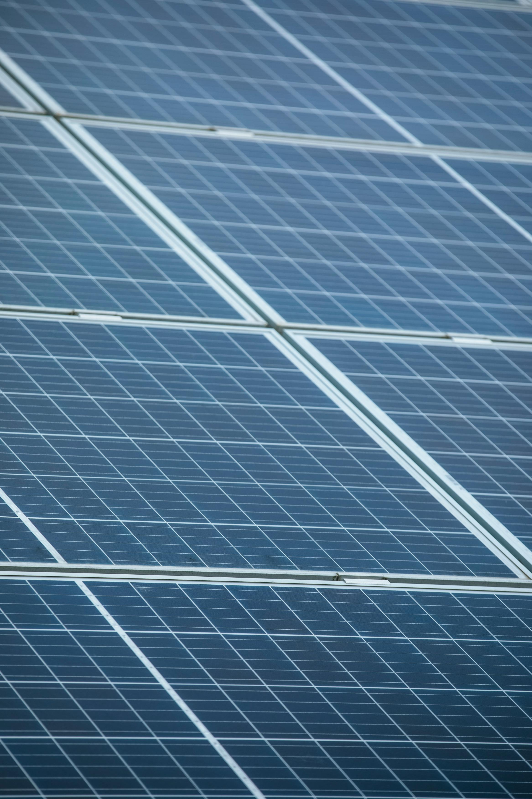
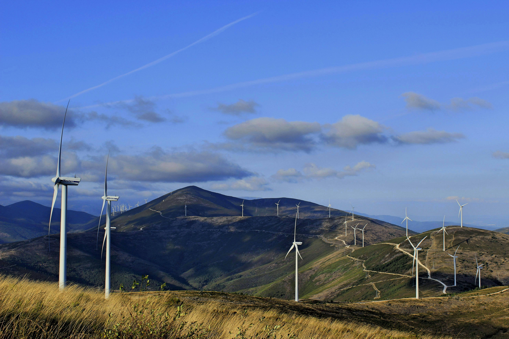

Energia limpa e renovável: O futuro da energia
Tipos de energia limpas.
Energia Solar
o que é energia solar?
A energia solar é uma fonte renovável e inesgotável gerada pela luz (fotovoltaica) ou calor (térmica) do sol. Através de painéis fotovoltaicos, converte a radiação em eletricidade, reduzindo a conta de luz em até 90%, sendo sustentável e de fácil manutenção, embora exija alto investimento inicial e seja intermitente.

Energia Eólica
o que é energia Eólica
A energia eolica em eletricidade. Com baixo impacto ambiental, é a segunda maior fonte de geração no Brasil, concentrada

Hidrelétrica
o que é energia hidreletrica
A energia hidrelétrica é uma fonte renovável e limpa, gerada pela força da água em movimento (energia cinética) em rios, que aciona turbinas e geradores em usinas. No Brasil, representa a principal fonte de eletricidade, correspondendo a mais de 60% da matriz energética, com destaque para a usina de Itaipu, uma das maiores do mundo. O processo converte energia potencial em elétrica com alto rendimento, geralmente superior a 90%

Biomassa
o que é energia biomassa
A energia biomassa é uma fonte renovável gerada a partir de matéria orgânica, como bagaço de cana, madeira e resíduos agrícolas. Ela produz eletricidade, calor e biocombustíveis (etanol, biodiesel, biogás) com baixo custo e menor emissão de poluentes que combustíveis fósseis, representando cerca de 8% da matriz elétrica brasileira
Hidrogênio-Verde
o que é energia Hidrogênio-Verde
O hidrogênio verde ( é um combustível limpo produzido pela eletrólise da água usando fontes renováveis (solar/eólica), separando hidrogênio e oxigênio sem emitir) . É considerado o "combustível do futuro" por ser 100% sustentável, armazenável e versátil, sendo uma alternativa crucial para descarbonizar indústrias pesadas e transportes

Geotérmica
o que é energia geotérmica
A energia geotérmica é uma fonte renovável e limpa, gerada pelo calor interno da Terra armazenado em rochas, solos e águas subterrâneas. Ela é aproveitada por meio de poços de extração para produzir eletricidade em usinas ou para aquecimento/resfriamento direto, com baixo impacto ambiental e alta estabilidade, não dependendo de fatores meteorológicos